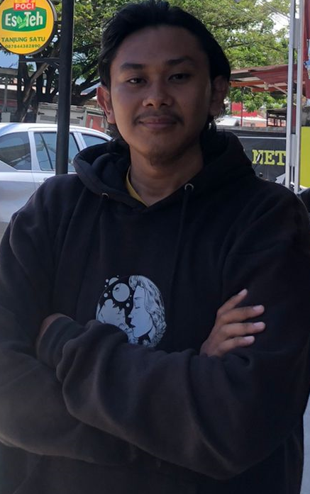

MUAMAR FARHAN
F52120032
Among Us
Game Among Us sudah rilis sejak 2018 dan dikembangkan InnerSloth. Namun, kepopulerannya kembali mencuat saat kondisi pandemi, di mana semakin banyak pengguna memainkan gim untuk mengisi waktu luang bersama teman atau kerabatnya. Permainan bertema luar angkasa ini kembali populer karena banyak content creator gim yang memainkannya.
Gim Among Us dapat dimainkan siapa pun karena konsep dan cara memainkannya cukup sederhana. Dalam gim ini, terdapat dua tim, yaitu crewmates sebagai manusia biasa yang harus menyelesaikan tugas yang diberikan, dan impostors sebagai penjahat yang harus membunuh semua manusia yang ada dengan caranya sendiri.
Terdapat 4-10 pemain dalam satu room dan tiga lokasi yang berbeda. Tugas crewmates terbilang sangat sederhana. Mereka bertugas untuk menyelamatkan pesawat yang sudah disabotase impostors, hingga melakukan diskusi antara pemain untuk membunuh impostors yang sudah menyamar sebagai crewmates.
Diskusi inilah yang biasanya sangat kocak karena saling curiga dan saling tuduh antar-teman. Jadi, tak mengherankan jika kita melihat video Among Us di YouTube biasanya menampilkan orang marah-marah atau tertawa terbahak-bahak karena saling tuduh satu sama lain.
Pengguna yang ditunjuk sebagai impostors tidak mengetahui misi apa saja yang harus dilakukan. Mereka hanya ditugaskan untuk membunuh semua crewmates agar permainan selesai dan impostors menang. Impostors juga bertugas untuk berpura-pura menjadi crewmate dan harus merancang strategi dalam pembunuhan agar tidak terlihat crewmates lain.
Sumber: Tek.id -